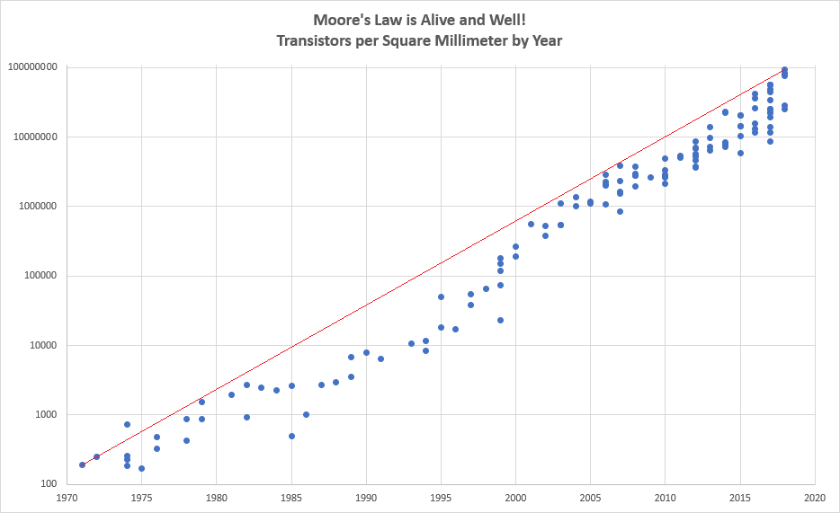
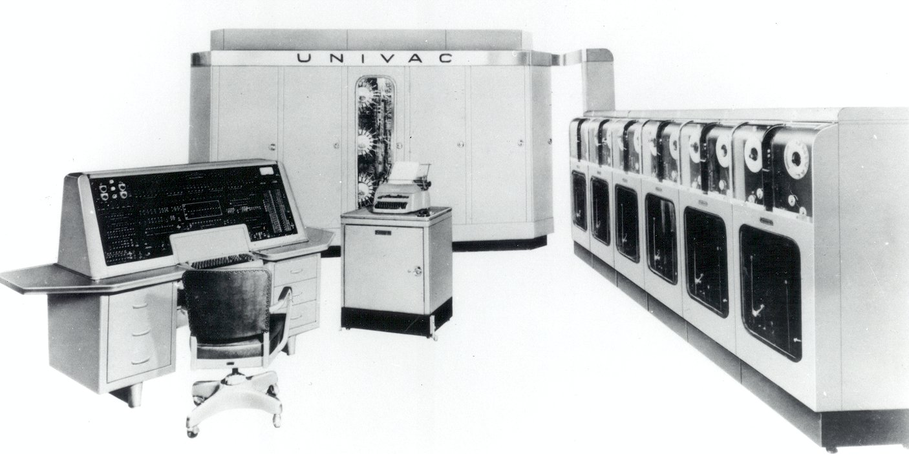
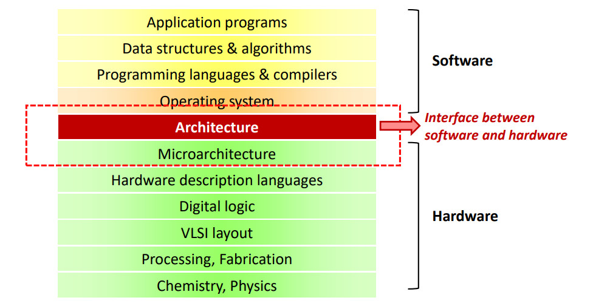
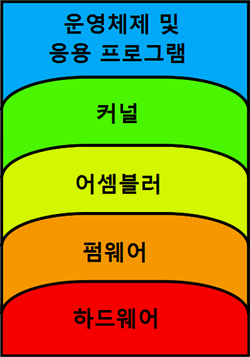
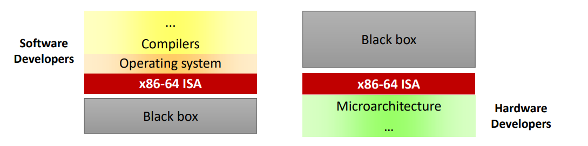
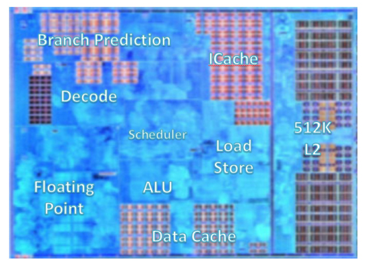
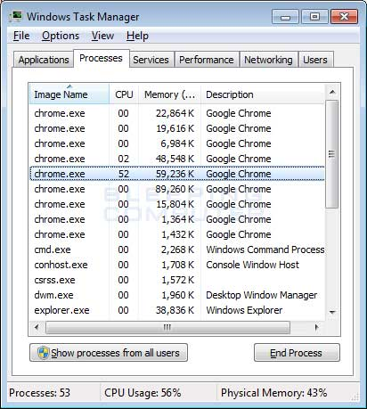

Open College -
From Python Programming
To Web Programming
#Session1 2019/10/25
Created by
Amos Dawn
## TODO * Session#0. - Computer Architecture * 다같이 Homework 체크! * Python - 연산자 / List / Tuple * HTML 기본 고고씽
## Slack Channel * https://mossol.slack.com * #openCollege-python 채널에서 필요한 코드등을 업로드
Session#0. - Computer Architecture??
컴퓨터 아키텍처란??
### Moore's Law * 24개월마다 단일 Chip에 들어가는 Transistor의 수는 2배씩 증가한다. 
### Moore's Law (Cont.d)  <img src="images/iphone.jpg" height="350"/>
### Computer Architecture 
#### Computer Architecture (Cont.d) * ISA (Instruction Set Architecture)의 설계 및 구현 
#### ISA (Instruction Set Architecture) * Interface between H/W S/W * Hardware Abstraction for software * Instrunction encoding / registers / addressing * ex) x86, ARM, MIPS, Power Architecture... 
### CPU * ISA Implementation * Intel i7 / AMD Ryzen / Samsung Exynos * Performance = CPI * Clock Cycle 
### Process / Thread * CPU 자원을 사용하는 주체 * Multitasking - 여러 Process들이 CPU의 자원을 나눠 갖는 것 
Python 고고씽~
PyCharm을 켜주세요
## 기본적인 사칙연산 ``` a = 6 b = a + 3 c = a * 2 d = a / 6 e = a % 6 ```
## Boolean Type * 참 / 거짓! ``` True False ```
### 비교연산자 * ==이 우리가 아는 그 같다이다! ``` a = 2 a == 2 a != 2 a > 2 a < 2 ```
## 논리 연산자 * and or not ``` a = 2 b = 3 a == 2 and b == 3 a == 3 or b = 4 ```
### if문 * 조건에 따라 처리를 나눌 때 사용 ``` a = input("당신의 시험점수를 입력하세요: ") if a == 100: print("축하합니다! 만점입니다!") else print("불합격입니다. 아쉽습니다.") ```
### if문 (Cont.d) * 지난 시즌 Bot도 if문의 향연 ``` a = input("메시지를 입력하세요 : ") if a == "안녕": print("반가워") elif a == "멍멍!!": print("멍멍!!") ```
### List * 여러 박스를 테이프로 붙인 것! ``` a = list() # 빈 리스트 생성 a = [1, 2, 3] b = ['치킨', '280000원'] ```
### List element * 각각의 상자에 접근해보자! * 리스트의 길이를 구할 때에는 len함수를 이용! ``` a = [1, 3, 5] a[0] = 2 print(a) print(len(a)) ```
### List 조작 * 추가하거나~ 삭제하거나~ 연결사거나~ ``` openCollegeSeason1 = ['유선님', '재희님', '은진님'] openCollegeSeason1.append('광우님') openCollegeSeason1.append('재희님') openCollegeSeason1.append('은진님') openCollegeSeason2 = ['승혜님', "민혜님", "이혁님"] openCollegeSeason2 = openCollegeSeason1 + openCollegeSeason2 openCollegeSeason2.del("이혁님") ```
### List Sorting * sort() 메소드를 이용 * 새로운 List를 생성하기 위해서는 sorted() 함수를 이용 ``` a = [1, 3, 54, 1123, 0, -1] a.sort() a.sort(reverse = True) c = [5, 1, 3, 0] d = sorted(c) ```
### Tuple * 꽁꽁 얼린 List ``` a = ("재희님", "지영님", "유선님", "은진님", "광우님") ```
HTML 고고씽~
## HTML이란? * HyperText Markup Language * 즉, 프로그래밍 언어가 아닌 마크업 언어! * 마크업 언어 : Data를 표현하기 위한 언어 (XML, Json) * 주로 tag를 이용하여 Data의 Hierarchy를 표현
### HTML의 기본 head와 body * head - 보여지지 않는 메타 정보들이 들어가는 부분 * body - 눈에 보여지는 부분 ``` <head> <title>test</title> </head> <body> 안녕? </body> ```
### 문자열에 링크 걸기 * a tag를 사용! ``` <head> <title>test</title> </head> <body> <a href="http://naver.com">네이버</a> </body> ```
### 이미지 넣기 * img tag를 사용! ``` <head> <title>test</title> </head> <body> <img src="이미지 경로"/> </body> ```
## Group Homework * 백준 (https://www.acmicpc.net/) * https://www.acmicpc.net/problem/1330 * https://www.acmicpc.net/problem/9498 * https://www.acmicpc.net/problem/2753 * https://www.acmicpc.net/problem/10817
## Homework * 점프 투 파이썬 (https://wikidocs.net/book/1) * 02-3 리스트 자료형 * 02-4 튜플 자료형 * 02-7 불 자료형 * 02-8 자료형의 값을 저장하는 공간, 변수 * 03-2 while문 * 파이썬이 보이는 그림책 * 2장 연산자 3장 리스트
THE END
Is there any questions?
-
amos.doan@gmail.com
-
mossol.net